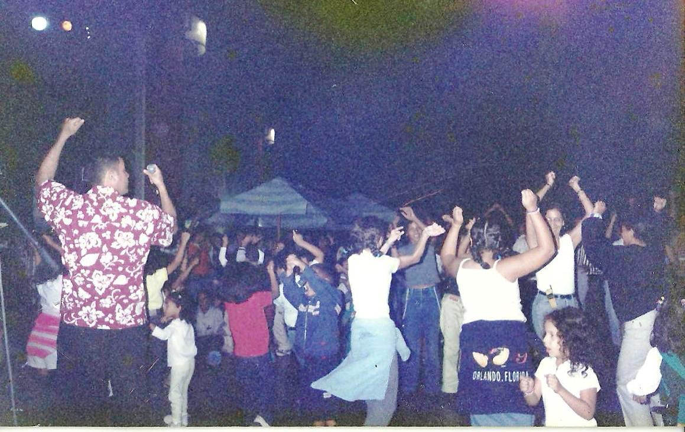

Nuestra Empresa
La agrupación de gaita venezolana "Nuestro Swing Gaitero" vio la luz en el año 1995, marcando el inicio de una travesía musical que perduraría en el tiempo. Bajo la dirección general de la apasionada y visionaria Zulay Delgado, así como la experta batuta de Onel Aguilar, la agrupación ha dejado una huella indeleble en el panorama musical.
A lo largo de su carrera, Nuestro Swing Gaitero ha cosechado una serie de reconocimientos locales que atestiguan su indudable talento y dedicación. Entre estos destacan el prestigioso galardón "Agrupación del Año por Revelación", que les fue otorgado en múltiples ocasiones, así como el codiciado "Premio La Gaviota de Oro", que enaltece su excelencia artística durante varios años consecutivos. Asimismo, la agrupación ha sido honrada con el distinguido "El Anthony de Oro", consolidándose como una de las voces más destacadas en el universo de la gaita venezolana.
El legado musical de Nuestro Swing Gaitero se ha materializado a través de una serie de producciones que han resonado de manera contundente en las ondas radiales. Sus obras han sido acogidas con entusiasmo y admiración por un público ávido de autenticidad y pasión por la música tradicional venezolana.

Con una trayectoria rica en logros y una discografía que encarna el alma de la gaita, Nuestro Swing Gaitero se erige como un emblema insustituible en el vasto universo musical de Carabobo y de Venezuela. Su dedicación incansable y su compromiso con la preservación y la expansión de la gaita venezolana continúan resonando en cada acorde, asegurando que su legado perdure por generaciones venideras.

En esta temporada contamos con músicos de trayectoria y continuamos con nuestro show musical incorporando en el todos las gaitas iconos con una animación contagiosa con el público q nos hemos ganado el nombre de grupo show. Le envío lo más reciente.